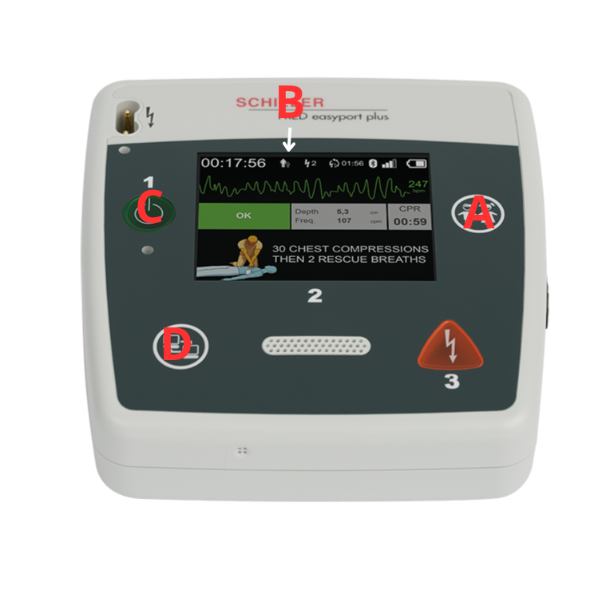

Monitorläge
I monitorläge fungerar FRED easyport plus som en EKG-monitor, utan att automatiskt analysera rytm eller ge röstinstruktioner.
- Syfte: Att övervaka hjärtats rytm via EKG utan att automatiskt trigga defibrillering.
- Aktivering: Med deffen påslagen. Växla till monitorläge: Tryck samtidigt på patientknappen (A) och dataknappen (D) två gånger.
- Vad visas: EKG-kurva och hjärtfrekvens visas på skärmen i realtid.
- Apparaten går tillbaka till AED läge om den upptcäker defibrilerbar rytm.
- Du kan avbryta monitorläget närsomhelst genom att koppla ur deff plattorna från apparaten i ca 5 sekunder.
- Observera: Monitorläge kräver korrekt elektrodplacering och lugn arbetsmiljö för att få god signal.
